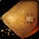

انتشار نخستین هاتفیکسهای WoW: Forever همراه با بهبود سرعت اسپاون Deathstalker Erland
اولین مجموعه از هاتفیکسهای بازی WoW: Forever منتشر شد که در آن مواردی از جمله سرعت اسپاون انپیسیها و مربیان کلاسها اصلاح شده است.

نخستین بستهٔ بهروزرسانی زنده (Hotfix) برای عنوان WoW: Forever با هدف برطرفسازی باگهای مربوط به انپیسیها، آیتمها، کوئستها و بخش PvP اعمال شد. از نکات مهم این تغییرات، افزایش محسوس سرعت ریسپاون برخی انپیسیهای مورد نیاز برای مأموریتها است.
دشمنان و NPCها
- منطقهٔ Durotar: برطرف شدن مشکل کندی غیرعادی در ریسپاون Yarrog Baneshadow (مربوط به مأموریت Burning Blade Medallion).
- منطقهٔ Zephras Isle: انپیسی سوم آموزش دروید یعنی Lotheluum Starbreeze اکنون طبق انتظار آموزشهای لازم را به Druidها ارائه میدهد.
- منطقهٔ Dustwallow Marsh: رفع اشکال سرعت ریسپاون بیش از حد سریع برخی از murlocها.
- منطقهٔ Swamp of Sorrows: برطرف شدن مشکلی که در برخی مواقع مانع اسپاون شدن Pelluk میشد.
آیتمها
- فروشندگان لوازم تجاری (trade supply) در Zephras Isle اکنون کیفهای apprentice tradeskill را برای فروش عرضه میکنند.
- قیمت فروش

Mild Spices به وندورها کاهش یافت و از ۲ مس به ۱ مس (copper) تغییر کرد.
بخش PvP و مکانیکها
- رفع مشکلی که اجازه میداد Plainsrunning در فاز آمادهسازی میدانهای نبرد (Battlegrounds) به صورت انباشته (stack) درآید.
- توانایی Plainsrunning دیگر انباشته نمیشود و در صورت حمل پرچم در بتلگراند، لایههای آن لغو خواهد شد.
کوئستها
- اصلاح متن اشتباه در کوئست The Sisterhood of Elune.
- افزایش چشمگیر سرعت ریسپاون Deathstalker Erland برای انجام کوئست Escorting Erland.
این فهرست با اعمال بهروزرسانیهای تکمیلی و هاتفیکسهای جدیدتر برای بازی بهروز خواهد شد.